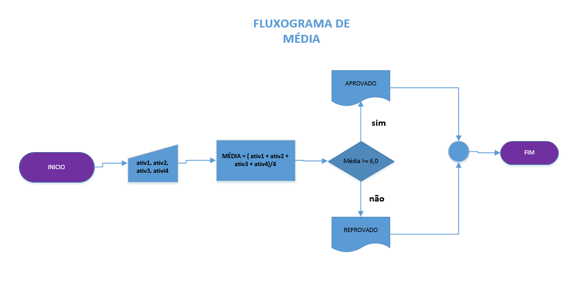
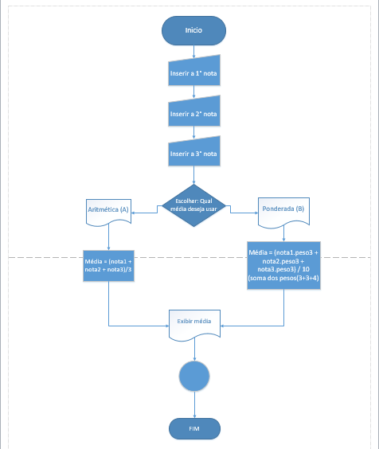

Fluxograma e algoritmo
FLUXOGRAMA
Um fluxograma de processo consiste na representação gráfica de um processo ou fluxo de trabalho a ideia é que ao observar o desenho uma pessoa consiga entender de maneira fácil a sequência com que as atividades ocorrem. Embora haja vários outros tipos, um fluxograma básico é a forma mais simples de um mapa de processo, e trata-se de uma ferramenta robusta para planejar, visualizar, documentar e otimizar processos em diversas áreas de conhecimento para isso se usa elementos como formas geométricas, setas e descrições breves.

O QUE SÃO ALGORITMOS?
Um algoritmo é uma sequência finita de ações que visa resolver um problema específico na informática, os algoritmos são a base do desenvolvimento de software, representando passos detalhados para realizar uma tarefa. Existem diversos algoritmos com diferentes níveis de complexidade, por exemplo, na internet, os algoritmos do Google, Facebook e outras plataformas seguem processos específicos para responder a ordens e realizar ações e essas sequências de procedimentos devem ter início e fim em uma linguagem compreensível pela máquina.
COMO FUNCIONA OS ALGORITMOS E SEUS SÍMBOLOS:
Os algoritmos são conjuntos de instruções passo a passo projetados para resolver problemas específicos, e eles recebem dados de entrada, processam esses dados, geram resultados e podem envolver repetição ou decisões. A eficácia dos algoritmos depende da escolha adequada de estruturas de dados e lógica de controle são fundamentais na computação e aplicados em diversas áreas para solucionar problemas.
Já nos seus símbolos existem diversos coisas usadas em algoritmos, classificados em: Representação de Dados, Controle de Fluxo, Entrada/Saída, Armazenamento de Informações e Processamento de dados, sua categoria desempenha um papel específico na representação e execução de algoritmos.
MÉDIA ARITMÉTICA:
A média aritmética é uma medida estatística que representa o valor médio de um conjunto de números e para calculá-la, soma-se os números e divide-se pelo número de elementos. Essa média é amplamente aplicada em estatísticas, matemática, análise de dados e finanças, sendo uma forma simples e valiosa de expressar a tendência central de um conjunto de dados.
